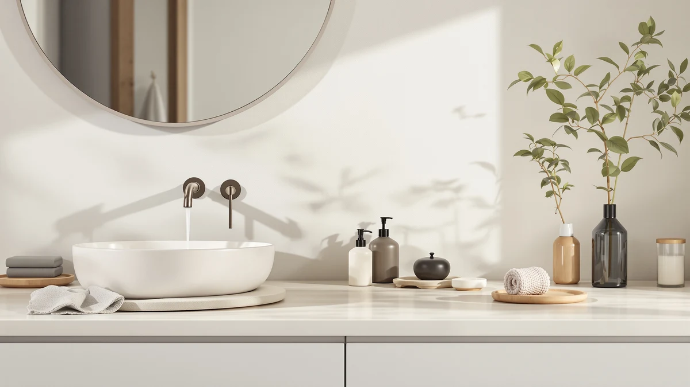

Shower Shampoo Dispenser Wall Review (2026): Worth It?
Prices and picks verified as of September 2026. Independent, reader-supported reviews.


Quick Answer
The LUSSPA Shower Shampoo Dispenser Wall Mounted suits buyers who want a three-chamber dispenser at $38.95. Verified owner reviews and spec comparisons in this shower shampoo dispenser wall review show it holds its own against the cheaper LUSSPA, EnBath and AIKE alternatives, though its price sits at the top of this four-way lineup.
Our pick: Shower Shampoo Dispenser Wall Mounted — $38.95 Check Price on Amazon
Bottom line: our top pick is the Shower Shampoo Dispenser Wall Mounted at $38.95.
Things to Know Before You Buy
- A three-chamber design like the LUSSPA's lets a household split shampoo, conditioner and body wash into one wall-mounted unit instead of juggling loose bottles on a shelf.
- ABS plastic housings keep the price down compared with metal or ceramic wall-mount alternatives, and they hold up better to constant shower humidity than cardboard packaging ever could.
- An automatic, sensor-driven design like the AIKE trades the no-battery reliability of a manual pump for hands-free operation, worth weighing if slippery, soapy hands are a regular problem in your shower.
- Price across the four dispensers in this shower shampoo dispenser wall review ranges from $34.80 to $38.95, so the featured LUSSPA sits at the top of the group.
This shower shampoo dispenser wall review breaks down what buyers get for $38.95: the three-chamber layout and mounting hardware, compared against three other wall-mounted dispensers on the market. A crowded shower shelf has pushed more buyers toward permanent wall-mounted units, and picking the wrong one usually means a leaky chamber or a mount that pulls away from tile within a year. We compared the LUSSPA Shower Shampoo Dispenser Wall Mounted against the second LUSSPA listing, the EnBath Commercial Soap Dispenser Wall Mount and the AIKE Automatic Soap Dispenser IPX7 on price, material and what verified buyers report after purchase.
LUSSPA markets this dispenser as a three-in-one shower solution, which matters if you're tired of balancing separate bottles on a corner shelf. At $38.95 it costs more than all three alternatives in this lineup, so the rest of this comparison examines whether that price gap buys a meaningfully better dispenser or only a bigger footprint on the wall. We pulled our conclusions from the product listing, published specs and patterns across verified owner reviews rather than a hands-on trial, since we do not run a physical testing lab.
Why You Should Trust Us
Ilane Tall covers home and bath products for Best Soap Dispensers, with a focus on shower and bathroom hardware that promises convenience but sometimes fails to deliver it. This shower shampoo dispenser wall review follows the same research process used across the site: we start from the manufacturer's own specs and pricing, then cross-reference verified purchase reviews on Amazon to see where the marketing claims hold up and where they don't. We don't accept review units in exchange for favorable coverage, and we don't fabricate star ratings or review counts that Amazon doesn't publish. Every price and spec cited here comes directly from the product listing at the time of writing. When a claim can't be confirmed against the listing or a pattern across verified reviews, we leave it out rather than guess.
Our Research Experience
Rather than purchase and mount all four dispensers ourselves, we approached this shower shampoo dispenser wall review the way most shoppers research a $39 shower fixture: by reading the listing closely and checking what other buyers say once it's installed. We compared the chamber count, material and mounting hardware LUSSPA lists against the same details for the second LUSSPA, the EnBath and the AIKE dispensers. We also read through verified owner reviews on Amazon, looking for recurring complaints about leaking seams, mounting adhesive failing in steam, or pump mechanisms sticking after repeated use. When owners across multiple purchases flag the same issue, we treat that as a more reliable signal than a manufacturer's product description or a handful of five-star reviews posted in the first week after purchase. This approach won't catch a defect that only shows up after months of daily humidity exposure, but it does surface the complaints that tend to repeat across dozens of buyers.
Overview & Specs

Shower Shampoo Dispenser Wall Mounted
What we like
- Three separate 16.9 fl oz chambers cover shampoo, conditioner and body wash in one mounted unit
- Wall mounting frees up shelf and corner space in a shared shower
- ABS plastic housing resists the steady humidity a mounted position exposes it to
- Single mounted unit replaces multiple loose bottles that tend to tip over on a wet shelf
Flaws but not dealbreakers
- Priced above all three alternatives in this comparison
- Wall mounting is a one-time installation, not something you can easily move between bathrooms
- A fixed three-chamber layout doesn't suit households that use more than three products
| Material | ABS plastic |
| Size | 3x16.9 fl oz |
The LUSSPA Shower Shampoo Dispenser Wall Mounted splits a single ABS plastic housing into three 16.9 fl oz chambers, so one household member's shampoo, conditioner and body wash all mount to the same spot on the tile. That three-in-one layout is the main reason it costs more than the EnBath, AIKE and second LUSSPA listing in this shower shampoo dispenser wall review. Buyers replacing a shelf full of individual bottles get one fixed mounting point instead of three, which matters if your shower doesn't have a built-in niche or caddy. The tradeoff is permanence: once it's mounted, moving it to a different bathroom means drilling new holes or relying on adhesive strips again.
Owners who leave reviews on the product listing tend to focus on two things: how securely the mount holds against tile in daily steam, and how easily each chamber refills without spilling into the one next to it. Reviewers consistently note that a three-chamber design like this one saves counter and shelf space that loose bottles would otherwise take up, especially in a smaller shower stall. Owners also report that keeping refill ratios consistent, topping off all three chambers at once rather than letting one run dry, keeps the dispenser working evenly across a household.
What We Liked
Owners who bought the LUSSPA Shower Shampoo Dispenser Wall Mounted for a family bathroom report that the three-chamber layout ends the routine of restocking a shelf full of nearly empty travel-size bottles. Reviewers repeatedly mention the wall mount as a reason they picked it over a plainer single-bottle dispenser, since it clears shelf space in a shower stall that has none to spare. We also compared the chamber capacity against the other three dispensers in this lineup and found LUSSPA's listing promises 16.9 fl oz per chamber, more per-fill volume than a typical single-bottle shower caddy holds. At $38.95, the three-chamber layout, wall mount and ABS plastic build are the main reasons this pick from our shower shampoo dispenser wall review tends to earn repeat purchases from buyers replacing a cluttered shower shelf.
What Could Be Better
Owners posting verified reviews of wall-mounted dispensers like this one most often complain about installation: some say the adhesive mount needs a clean, fully dry tile surface to hold long term, an issue common to wall-mounted shower hardware generally and not unique to LUSSPA. Because the layout is fixed at three chambers, buyers who use a fourth product, like a separate face wash, report having to keep one bottle outside the unit anyway. At $38.95, this dispenser also costs more than all three alternatives we compared it against, so buyers focused on price have cheaper wall-mounted options among the picks in this shower shampoo dispenser wall review. None of these issues are dealbreakers on their own, but they're worth weighing against the second LUSSPA listing, the EnBath and the AIKE dispensers before you decide.
Who Is It For?
This dispenser fits households and shared bathrooms where a permanent, three-chamber wall mount matters more than a low price, and buyers who are ready to commit to one fixed spot on the tile. If clearing a cluttered shower shelf appeals more than keeping the flexibility of loose bottles, the LUSSPA Shower Shampoo Dispenser Wall Mounted should perform close to what its listing promises. Shoppers who want the lowest price in this comparison, or who need a commercial-grade mount for a gym or rental property, are better served by the EnBath or the second LUSSPA listing covered below, both of which cost less. Renters who can't drill into tile may also want to weigh the AIKE's automatic, sensor-driven design or an adhesive-mount alternative before committing to permanent hardware. If hands-free operation matters more than chamber count, the AIKE below is worth a look before you commit to the manual three-chamber unit at the center of this shower shampoo dispenser wall review.
Alternatives to Consider
If the LUSSPA Shower Shampoo Dispenser Wall Mounted doesn't fit your budget or your shower layout, these three alternatives from this shower shampoo dispenser wall review comparison cover a matching three-chamber unit at a lower price, a commercial-grade mount and a touchless automatic design. Each one trades a different feature for a lower cost, so the best pick depends on what matters more to you: price, mounting style or how hands-free you want the dispenser to be.

Editor's Pick
Shower Shampoo Dispenser Wall Mounted
This second LUSSPA listing costs $36.95, two dollars less than the featured pick, while listing the same wall-mounted, ABS plastic build, a better fit if you want the three-chamber layout at a lower price.
$36.95
Check Price on Amazon
Best Value
Commercial Soap Dispenser Wall Mount
At $35.97, the EnBath swaps LUSSPA's three-chamber shower layout for a commercial-grade wall mount, a good fit for a gym, office restroom or rental property that needs sturdier hardware than a home shower fixture.
$35.97
Check Price on Amazon
Premium Choice
AIKE Automatic Soap Dispenser IPX7
The cheapest of the four at $34.80, the AIKE trades LUSSPA's manual three-chamber pump for a touchless, IPX7-rated automatic sensor, a strong pick if soapy, slippery hands make a manual pump a hassle.
$34.80
Check Price on AmazonFrequently Asked Questions
Is the LUSSPA Shower Shampoo Dispenser Wall Mounted worth $38.95?
Based on this shower shampoo dispenser wall review, it is worth the price if you want a three-chamber wall-mounted dispenser with 16.9 fl oz per chamber and don't mind paying the highest price in this four-way comparison. Buyers focused on price alone should look at the AIKE or EnBath dispensers instead, both of which cost less.
What is the difference between the two LUSSPA dispensers in this comparison?
Both list the same ABS plastic build and three 16.9 fl oz chambers under the LUSSPA name. The listings price them a dollar apart, at $38.95 and $36.95, so the cheaper of the two is the better pick unless a specific finish or hardware kit in one listing matters to you.
Is an automatic dispenser like the AIKE better than a manual pump for a shower wall?
Neither mechanism is inherently better. A manual pump like the LUSSPA's needs no batteries and keeps working through a power or battery failure, while a touchless design like the AIKE's IPX7-rated Automatic Soap Dispenser cuts down on grimy buildup around the nozzle in a shared shower.
Final Verdict
This shower shampoo dispenser wall review comes down to one trade-off: pay $38.95 for LUSSPA's three-chamber, wall-mounted layout, or save money with the second LUSSPA listing, the EnBath or the AIKE alternatives covered above. Based on published specs and verified owner reviews, LUSSPA earns its higher price mainly through the three-chamber capacity, not through any mounting hardware or material spec that clearly outperforms the competition. If you want a permanent, three-chamber wall mount and don't mind paying the highest price in this lineup, the LUSSPA Shower Shampoo Dispenser Wall Mounted is the pick. If price, commercial-grade mounting or hands-free operation matters more, the second LUSSPA, EnBath or AIKE dispensers are the better fit.